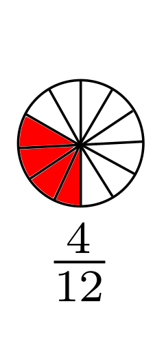

1. Upprifjun um almenn brot
1.1. Almenn brot
Almennt brot er tala sem sett er fram sem hlutfall tveggja heilla talna - það er að segja ein tala deilt með annari.
Dæmi um almenn brot eru
Tölurnar eru venjulega aðskildar með láréttu deilingarstriki, talan fyrir ofan strik kallast teljari og talan fyrir neðan strik kallast nefnari.
Hægt er að líta á almennt brot sem köku þar sem nefnarinn táknar fjölda bita sem kökunni er skipt í og teljarinn táknar hversu marga bita við tökum.
{kind=link}
Tvö ólík almenn brot geta táknað sömu töluna og þetta má sjá með því að lengja og stytta brot. Brot er lengt með tölu ef við margföldum bæði teljara og nefnara með henni. Dæmi
{kind=link}
Þegar við lengjum erum við bara að skipta kökunni í fleiri sneiðar og þá þarf líka að breyta teljaranum (fjölda sneiða) til að fá jafn mikið af köku og áður.
Brot er stytt með tölu ef hægt er að deila með sömu tölu í teljara og nefnara. Dæmi
{kind=link}
Þegar við styttum erum við að sameina kökusneiðar öfugt við þegar við lengjum.
Almennt brot er fullstytt ef engin tala (önnur en 1) gengur upp í bæði teljara og nefnara.
1.1.1. Spurning
Hvaða almenn brot að ofan eru ekki fullstytt og hvernig líta þau út ef þau eru fullstytt?
1.2. Samlagning og frádráttur almennra brota
Þegar við leggjum saman tvö almenn brot þá þarf fyrst að gera þau samnefnd það er að segja breyta þeim þannig að þau hafi sama nefnara. Síðan eru teljararnir lagðir saman en nefnarinn helst óbreyttur. Dæmi
{kind=link}
Athugið að það er alltaf hægt að gera tvö almenn brot samnefnd með því að lengja annað brotið með nefnara hins og öfugt (það er samt ekki endilega besta leiðin ef við viljum enda með fullstytt brot). Í dæminu að ofan lengdum við fyrra brotið með 2 og seinna brotið með 3.
Þegar við drögum eitt almennt brot frá öðru gerum við alveg eins. Dæmi
1.3. Margföldun og deiling almennra brota
Margföldun og deiling almennra brota er í raun einfaldari en samlagning og frádráttur. Þegar tvö almenn brot eru margfölduð saman eru teljarnir og nefnararnir einfaldlega margfaldaðir saman. Dæmi
Þegar einu almennu broti er deilt upp í annað er því snúið við og svo margfaldað með því. Dæmi
Ef við notum þessa reglu þegar við reiknum 1 deilt með almennu broti þá snýst það einfaldlega við. Við munum koma aftur að þessu seinna. Dæmi